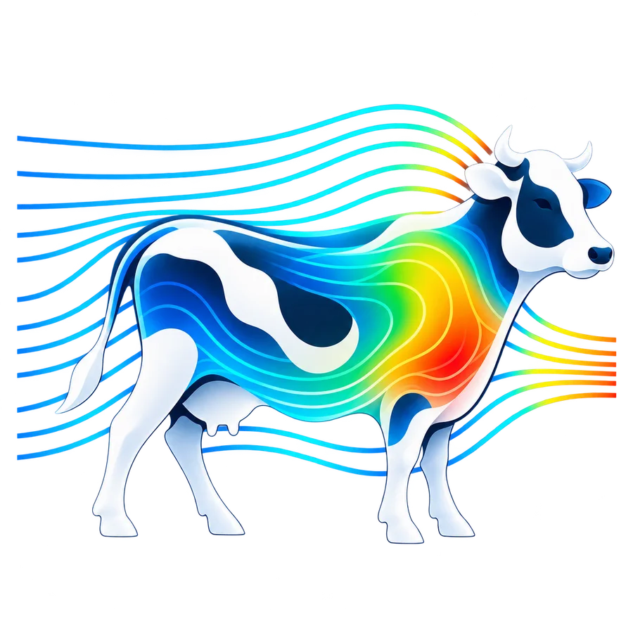
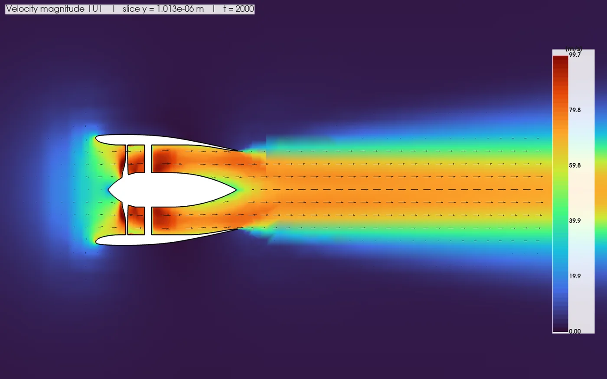
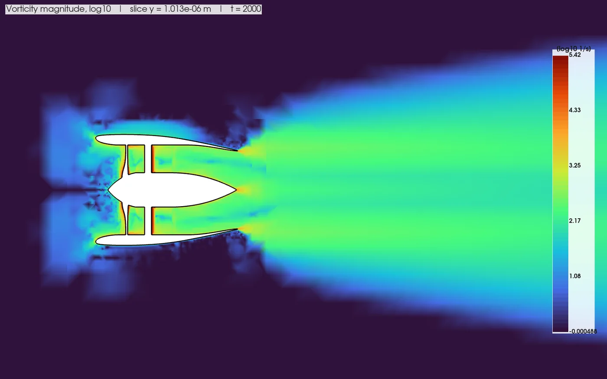
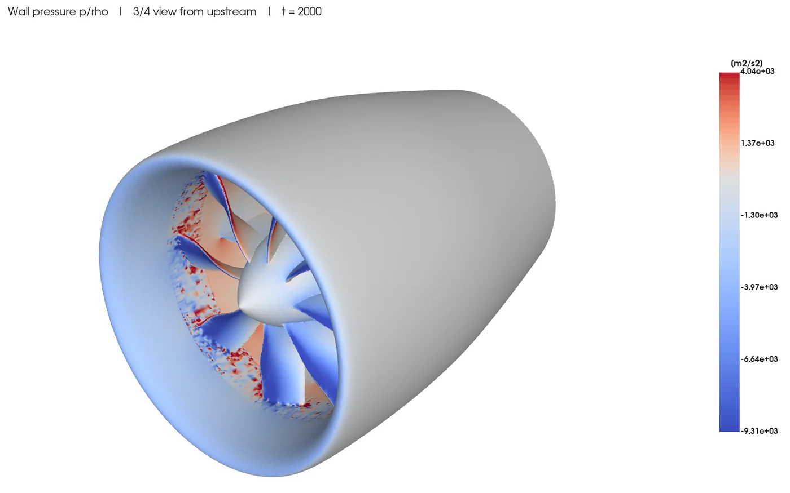
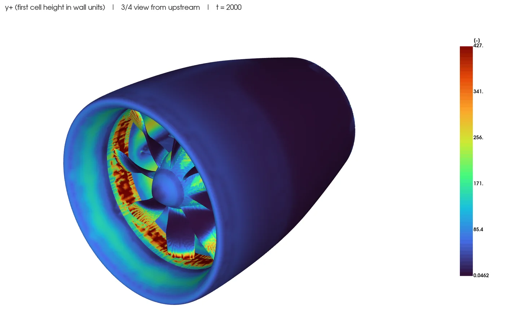

Who It Is For
A CFD engineer who already understands OpenFOAM. The goal is not CFD for beginners: it is the same solver with a modern workflow, so time goes into the physics instead of file editing.
Personal Project · CFD Software · Ongoing
A professional desktop environment for engineers who already know OpenFOAM
OpenFOAM is accurate and free, but every case means editing text dictionaries, running utilities in a terminal and opening ParaView to see anything. CowFD makes that loop faster with a CATIA/ANSA-style interface, while the case on disk stays a normal OpenFOAM case that can be read and edited by hand.

Objective
A CFD engineer who already understands OpenFOAM. The goal is not CFD for beginners: it is the same solver with a modern workflow, so time goes into the physics instead of file editing.
Test Case · Ducted Fan
These images come straight from CowFD's report tool on a ducted-fan test geometry. It renders slices along X, Y and Z for velocity, pressure and turbulence fields, plus wall pressure and y+, offscreen with VTK. It runs as a separate process, so a multi-million-cell case can take its time without freezing the interface. This is a development test case, not a validated design study.




What Works Today
Geometry & Mesh
Case Setup
Run
Results
Architecture
A core engineering model (geometry, mesh, physics, boundary conditions, numerics, solver, results and run history) owns the state. Qt widgets and the 3D viewers read and write that model and never call OpenFOAM directly. An adapter parses and writes the dictionaries both ways, so a hand edit to a file shows up in the GUI.
OpenFOAM has no reliable native Windows build, so every command runs through a process layer that calls OpenFOAM 11 inside WSL2 and translates paths. A set of CATIA macros prepares the CAD side: surfaces are split into zones, tagged by role and exported as a STEP package with a manifest.
Background
The project grows out of my OpenFOAM coursework: the converging nozzle and the NACA 4412 airfoil studies, both built on mesh-independence, near-wall and convergence checks. The app includes a reference airfoil case as its first test.